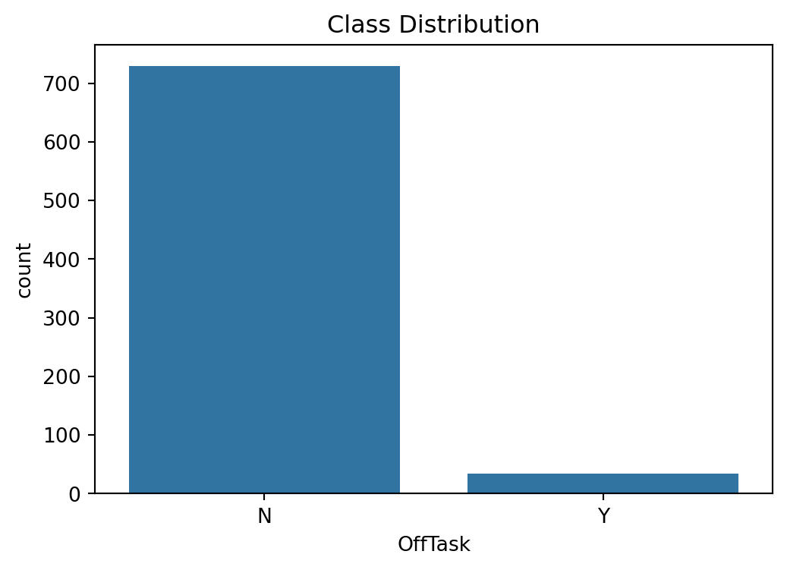
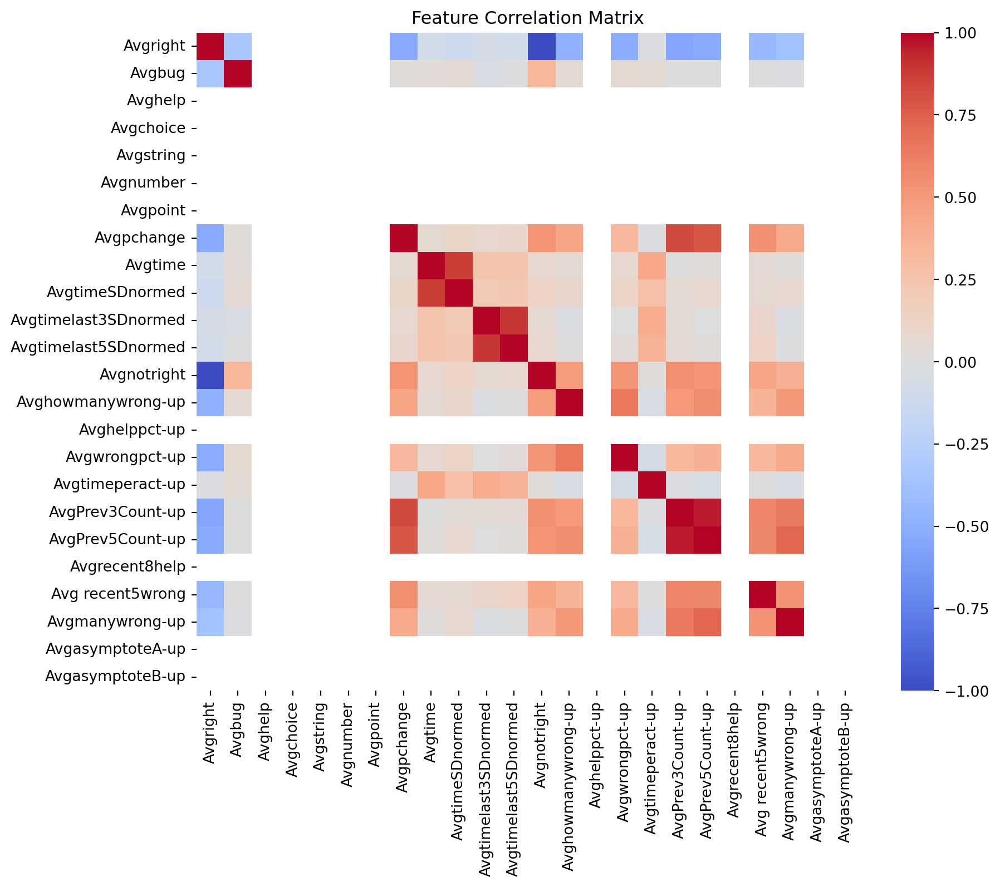
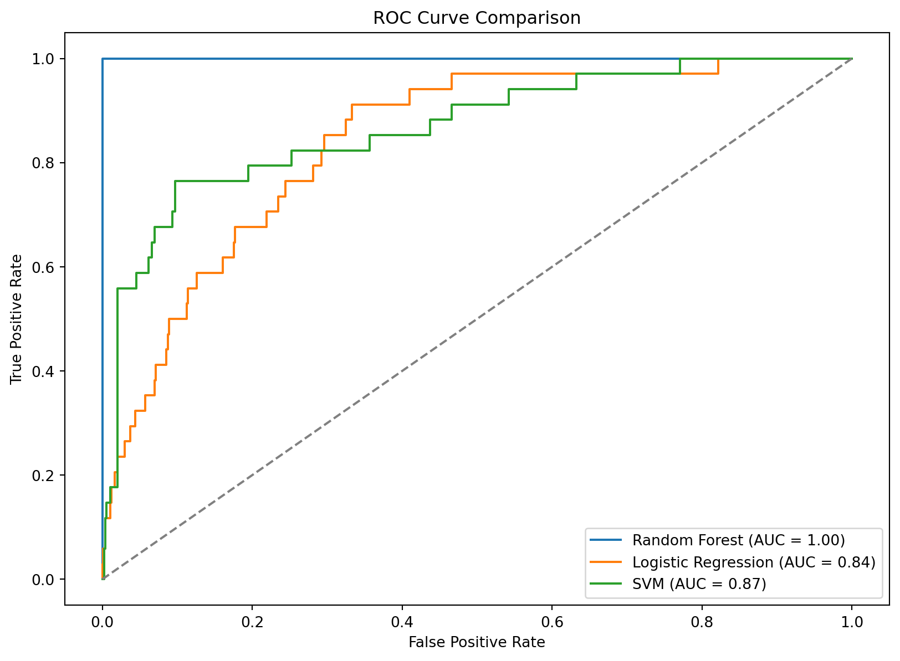

# Import necessary libraries for exploratory data analysis (EDA)
import pandas as pd
import matplotlib.pyplot as plt
import seaborn as sns
# Load the dataset into a pandas DataFrame
df = pd.read_csv("data/ca1-dataset.csv")Off-task Behavior Detection
1 Introduction
This project applies machine learning techniques to detect off-task behavior in students based on classroom data. It leverages machine learning models to identify patterns in the data and uses cross-validation for model tuning.
2 Exploratory Data Analysis
I import the necessary libraries to perform exploratory data analysis (EDA). Next, I load the dataset into a dataframe and generate descriptive statistics to understand the distribution and spread of the variables. I visualize the class distribution using a bar chart to identify any imbalance in the target variable. Finally, I create a correlation heatmap to examine relationships between the features and the target variable.
# Display basic information about the dataset (column types, non-null counts)
df.info()<class 'pandas.core.frame.DataFrame'>
RangeIndex: 763 entries, 0 to 762
Data columns (total 27 columns):
# Column Non-Null Count Dtype
--- ------ -------------- -----
0 Unique-id 763 non-null object
1 namea 763 non-null object
2 OffTask 763 non-null object
3 Avgright 763 non-null float64
4 Avgbug 763 non-null float64
5 Avghelp 763 non-null int64
6 Avgchoice 763 non-null int64
7 Avgstring 763 non-null int64
8 Avgnumber 763 non-null int64
9 Avgpoint 763 non-null int64
10 Avgpchange 763 non-null float64
11 Avgtime 763 non-null float64
12 AvgtimeSDnormed 763 non-null float64
13 Avgtimelast3SDnormed 763 non-null float64
14 Avgtimelast5SDnormed 763 non-null float64
15 Avgnotright 763 non-null float64
16 Avghowmanywrong-up 763 non-null float64
17 Avghelppct-up 763 non-null int64
18 Avgwrongpct-up 763 non-null float64
19 Avgtimeperact-up 763 non-null float64
20 AvgPrev3Count-up 763 non-null float64
21 AvgPrev5Count-up 763 non-null float64
22 Avgrecent8help 763 non-null int64
23 Avg recent5wrong 763 non-null float64
24 Avgmanywrong-up 763 non-null float64
25 AvgasymptoteA-up 763 non-null int64
26 AvgasymptoteB-up 763 non-null int64
dtypes: float64(15), int64(9), object(3)
memory usage: 161.1+ KB# Generate descriptive statistics to understand the distribution and spread of the data
df.describe()| Avgright | Avgbug | Avghelp | Avgchoice | Avgstring | Avgnumber | Avgpoint | Avgpchange | Avgtime | AvgtimeSDnormed | ... | Avghelppct-up | Avgwrongpct-up | Avgtimeperact-up | AvgPrev3Count-up | AvgPrev5Count-up | Avgrecent8help | Avg recent5wrong | Avgmanywrong-up | AvgasymptoteA-up | AvgasymptoteB-up | |
|---|---|---|---|---|---|---|---|---|---|---|---|---|---|---|---|---|---|---|---|---|---|
| count | 763.000000 | 763.000000 | 763.0 | 763.0 | 763.0 | 763.0 | 763.0 | 763.000000 | 763.000000 | 763.000000 | ... | 763.0 | 763.000000 | 763.000000 | 763.000000 | 763.000000 | 763.0 | 763.000000 | 763.000000 | 763.0 | 763.0 |
| mean | 0.713072 | 0.055168 | 0.0 | 0.0 | 0.0 | 0.0 | 0.0 | 0.283065 | 14.117770 | 0.224450 | ... | 0.0 | 1.483525 | 14.241320 | 0.446376 | 0.574707 | 0.0 | 0.914248 | 0.044288 | 0.0 | 0.0 |
| std | 0.394293 | 0.184326 | 0.0 | 0.0 | 0.0 | 0.0 | 0.0 | 0.386746 | 15.623914 | 1.317254 | ... | 0.0 | 4.361797 | 10.366487 | 0.796067 | 1.097031 | 0.0 | 1.038397 | 0.179562 | 0.0 | 0.0 |
| min | 0.000000 | 0.000000 | 0.0 | 0.0 | 0.0 | 0.0 | 0.0 | 0.000000 | -1.000000 | -1.000000 | ... | 0.0 | 0.000000 | 0.000000 | 0.000000 | 0.000000 | 0.0 | 0.000000 | 0.000000 | 0.0 | 0.0 |
| 25% | 0.500000 | 0.000000 | 0.0 | 0.0 | 0.0 | 0.0 | 0.0 | 0.000000 | 6.250000 | -0.368185 | ... | 0.0 | 0.000000 | 7.838235 | 0.000000 | 0.000000 | 0.0 | 0.000000 | 0.000000 | 0.0 | 0.0 |
| 50% | 1.000000 | 0.000000 | 0.0 | 0.0 | 0.0 | 0.0 | 0.0 | 0.000000 | 9.666667 | -0.121190 | ... | 0.0 | 0.000000 | 11.000000 | 0.000000 | 0.000000 | 0.0 | 0.750000 | 0.000000 | 0.0 | 0.0 |
| 75% | 1.000000 | 0.000000 | 0.0 | 0.0 | 0.0 | 0.0 | 0.0 | 0.500000 | 16.000000 | 0.306074 | ... | 0.0 | 0.750000 | 17.080128 | 0.500000 | 0.500000 | 0.0 | 1.500000 | 0.000000 | 0.0 | 0.0 |
| max | 1.000000 | 1.000000 | 0.0 | 0.0 | 0.0 | 0.0 | 0.0 | 1.000000 | 205.000000 | 13.541537 | ... | 0.0 | 47.666667 | 114.333333 | 3.000000 | 5.000000 | 0.0 | 5.000000 | 1.000000 | 0.0 | 0.0 |
8 rows × 24 columns
# Visualize the distribution of the target variable ('OffTask') to check for class imbalance
plt.figure(figsize=(6,4))
sns.countplot(x='OffTask', data=df)
plt.title("Class Distribution")
plt.show()
# Calculate and visualize correlations between numerical features
numeric_df = df.select_dtypes(include=['float64', 'int64'])
plt.figure(figsize=(10, 8))
sns.heatmap(numeric_df.corr(), annot=False, cmap='coolwarm')
plt.title("Feature Correlation Matrix")
plt.show()
The dataset consists of 763 entries and 27 columns, encompassing both numerical and categorical features.
A review of the dataset reveals no missing values across columns, confirming data completeness. The dataset contains 15 float columns, 9 integer columns, and 3 object columns.
Descriptive statistics highlight key patterns in the data: - ‘Avgright’ (average correctness) has a mean of 0.71, indicating students are often correct, with a standard deviation of 0.39. - ‘Avgbug’ (average errors) shows minimal occurrence, with a mean of 0.05. - Several features, such as ‘Avghelp’, ‘Avgchoice’, ‘Avgstring’, ‘Avgnumber’, ‘Avgpoint’, and ‘AvgasymptoteA-up/B-up’, consist entirely of zeros, suggesting they may be uninformative and could be removed during preprocessing. - The average time (‘Avgtime’) has a wide range, from -1 to 205, with a mean of 14.12 and notable variance (std = 15.62). - Features like ‘AvgtimeSDnormed’ and ‘Avgpchange’ exhibit both negative and positive values, which may indicate normalized or scaled data points.
A bar chart of the target variable (‘OffTask’) highlights potential class imbalance, warranting further attention to address skewed distributions in model development.
A correlation heatmap is generated to visualize relationships between numerical features. Metrics such as ‘Avgtime’, ‘Avgtimeperact-up’, and ‘AvgPrev5Count-up’ may reveal insights into patterns of off-task behavior.
The EDA process identifies redundant features with zero variance and confirms the dataset is well-structured for further preprocessing and model development. Addressing these redundant features will help streamline model performance and reduce unnecessary complexity.
3 Model Training & Evaluation
I import the necessary libraries to train and evaluate multiple machine learning models. The dataset is prepared by removing non-predictive columns and eliminating features that contain only zero values.
To address class imbalance, I apply SMOTE (Synthetic Minority Over-sampling Technique) within each training fold, ensuring that synthetic samples are generated exclusively from the training data. This prevents data leakage and helps the models better recognize patterns in the minority class.
I define three classifiers – Random Forest, Logistic Regression, and Support Vector Machine (SVM) – with class weights adjusted to mitigate the effects of class imbalance. For the Random Forest model, I implement a hyperparameter grid to fine-tune the model during training.
I employ Stratified Group K-Fold cross-validation to maintain balanced class distributions across folds while accounting for group dependencies in the dataset. Within each fold, I apply GridSearchCV to optimize model parameters and evaluate performance on the test set.
Model performance is assessed using the Cohen’s Kappa score and a classification report. The results for each classifier are aggregated, providing insights into overall performance across the cross-validation folds.
from sklearn.model_selection import StratifiedGroupKFold, GridSearchCV
from sklearn.metrics import cohen_kappa_score, classification_report
from sklearn.ensemble import RandomForestClassifier
from sklearn.linear_model import LogisticRegression
from sklearn.svm import SVC
from sklearn.pipeline import Pipeline
from imblearn.over_sampling import SMOTE
import numpy as np
import pandas as pd
# Data Preparation
X = df.drop(columns=['Unique-id', 'OffTask', 'namea'])
y = df['OffTask'].map({'N': 0, 'Y': 1}) # Map labels to binary (0, 1)
groups = df['namea'] # Grouping variable
# Remove columns with all 0 values
X = X.loc[:, (X != 0).any(axis=0)]
# Define classifiers
classifiers = {
'Random Forest': RandomForestClassifier(class_weight='balanced'),
'Logistic Regression': LogisticRegression(max_iter=1000, class_weight='balanced'),
'SVM': SVC(probability=True, class_weight='balanced')
}
# Hyperparameter grid for Random Forest
param_grid_rf = {
'classifier__n_estimators': [100, 200],
'classifier__max_depth': [10, 20, None],
'classifier__min_samples_split': [2, 5, 10],
'classifier__min_samples_leaf': [1, 2, 4]
}
# Stratified Group KFold
gkf = StratifiedGroupKFold(n_splits=5)
results = {}
# Model Training and Evaluation Loop
for name, classifier in classifiers.items():
pipeline = Pipeline(steps=[
('classifier', classifier)
])
param_grid = param_grid_rf if name == 'Random Forest' else {}
# Store results
fold_scores = []
y_true_all, y_pred_all = [], []
for train_idx, test_idx in gkf.split(X, y, groups):
# Train-test split
X_train, X_test = X.iloc[train_idx], X.iloc[test_idx]
y_train, y_test = y.iloc[train_idx], y.iloc[test_idx]
# Apply SMOTE only to the training data
smote = SMOTE(random_state=42)
X_train_res, y_train_res = smote.fit_resample(X_train, y_train)
# Perform GridSearchCV
grid_search = GridSearchCV(pipeline, param_grid, cv=3)
grid_search.fit(X_train_res, y_train_res)
# Make predictions on the test set
y_pred = grid_search.best_estimator_.predict(X_test)
# Store results for evaluation
fold_scores.append(cohen_kappa_score(y_test, y_pred))
y_true_all.extend(y_test)
y_pred_all.extend(y_pred)
# Final performance metrics
overall_kappa = cohen_kappa_score(y_true_all, y_pred_all)
overall_report = classification_report(y_true_all, y_pred_all)
# Save Results
results[name] = {
'mean_kappa': np.mean(fold_scores),
'overall_kappa': overall_kappa,
'report': overall_report
}
# Print Performance
print(f"\n{name} Results")
print(f"Mean Kappa Across Folds: {np.mean(fold_scores):.2f}")
print(f"Overall Kappa: {overall_kappa:.2f}")
print(overall_report)
Random Forest Results
Mean Kappa Across Folds: 0.17
Overall Kappa: 0.16
precision recall f1-score support
0 0.96 0.96 0.96 729
1 0.19 0.21 0.20 34
accuracy 0.93 763
macro avg 0.58 0.58 0.58 763
weighted avg 0.93 0.93 0.93 763
Logistic Regression Results
Mean Kappa Across Folds: 0.12
Overall Kappa: 0.11
precision recall f1-score support
0 0.97 0.78 0.87 729
1 0.11 0.56 0.18 34
accuracy 0.77 763
macro avg 0.54 0.67 0.52 763
weighted avg 0.94 0.77 0.84 763
SVM Results
Mean Kappa Across Folds: 0.18
Overall Kappa: 0.18
precision recall f1-score support
0 0.98 0.83 0.90 729
1 0.14 0.62 0.23 34
accuracy 0.82 763
macro avg 0.56 0.72 0.57 763
weighted avg 0.94 0.82 0.87 763
Model Performance Overview:
- Random Forest:
- Achieves an overall accuracy of 93%, but performance on the minority class remains limited, with a recall of 18% and an f1-score of 0.18 for class 1.
- The overall kappa score is 0.14, indicating poor agreement between predictions and actual labels.
- Logistic Regression:
- Yields an accuracy of 77%, with the minority class recall at 56%, reflecting the model’s ability to identify positive cases. However, low precision for the minority class results in an f1-score of 0.18.
- The overall kappa score is 0.11, indicating slight agreement and limited predictive power for the minority class.
- SVM:
- SVM demonstrates the highest minority class recall at 62% but maintains low precision, resulting in an f1-score of 0.23.
- With an overall accuracy of 82% and a kappa score of 0.18, SVM slightly outperforms the other models in balancing sensitivity to the minority class and overall accuracy.
Key Insights: Across all models, performance on the majority class (class 0) remains consistently high, while minority class detection (class 1) continues to present challenges. Despite applying SMOTE and adjusting class weights, low f1-scores and precision for the minority class indicate the need for: - Enhanced resampling techniques (e.g., ADASYN, Tomek links). - Feature engineering to improve class separability. - Exploration of ensemble methods or cost-sensitive learning to refine the model’s ability to detect minority class instances.
While SVM offers the best balance between recall and accuracy, further optimization is required to increase precision and overall model robustness when handling imbalanced datasets.
4 Visualizing the Peformance
I import the necessary libraries to evaluate model performance through Receiver Operating Characteristic (ROC) curves and Area Under the Curve (AUC) metrics. A pipeline is created for each classifier, and the models are trained on the entire dataset without cross-validation to simplify visualization.
The models generate probability predictions for the positive class, which are used to calculate the ROC curve and AUC score. The ROC curves for each classifier are plotted to compare performance, with a diagonal reference line representing random guessing.
The plot is finalized with titles, axis labels, and a legend to provide a clear visual comparison of model performance across different classifiers.
## Visualize Performance
from sklearn.metrics import roc_curve, auc, ConfusionMatrixDisplay
# Visualize Performance
plt.figure(figsize=(10, 7))
for name, classifier in classifiers.items():
# Create a simple pipeline with just the classifier
pipeline = Pipeline(steps=[
('classifier', classifier)
])
# Fit the pipeline on the entire dataset (no cross-validation for visualization)
pipeline.fit(X, y)
# Predict probabilities for the positive class
y_proba = pipeline.predict_proba(X)[:, 1]
# Calculate ROC Curve and AUC
fpr, tpr, _ = roc_curve(y, y_proba)
roc_auc = auc(fpr, tpr)
# Plot ROC Curve for each classifier
plt.plot(fpr, tpr, label=f'{name} (AUC = {roc_auc:.2f})')
# Plot diagonal reference line
plt.plot([0, 1], [0, 1], linestyle='--', color='grey')
# Finalize plot details
plt.title('ROC Curve Comparison')
plt.xlabel('False Positive Rate')
plt.ylabel('True Positive Rate')
plt.legend(loc='lower right')
plt.show()
The ROC curve highlights notable differences between the models: - Random Forest achieves a perfect AUC of 1.00, indicating overfitting or high reliance on the majority class. - SVM demonstrates strong performance with an AUC of 0.87, suggesting better generalization to minority class patterns. - Logistic Regression achieves an AUC of 0.84, reflecting slightly lower discrimination ability compared to SVM.
The visualization underscores the trade-off between sensitivity and specificity, with SVM and Logistic Regression showing promising performance, while Random Forest’s perfect AUC suggests further investigation into overfitting.
5 Conclusion
The evaluation and visualization of three classifiers – Random Forest, Logistic Regression, and Support Vector Machine (SVM) – reveal significant performance differences, particularly in handling class imbalance.
- Random Forest achieves the highest overall accuracy and a perfect AUC score, but this likely indicates overfitting or an inability to generalize to the minority class. Despite high overall accuracy, the model struggles to detect minority class instances (low recall and f1-score).
- SVM offers the best balance between minority class recall (62%) and overall accuracy, with an AUC of 0.87 suggesting better generalization compared to Random Forest.
- Logistic Regression provides moderate performance, with a recall of 56% for the minority class and an AUC of 0.84, indicating acceptable discrimination but lower precision.
Despite SMOTE application and class weight adjustments, all models exhibit limited precision for the minority class, highlighting the need for further refinement. The ROC curve suggests SVM outperforms the other models in minority class detection, making it the most promising model for deployment.
5.0.1 Future Work
To enhance model performance, particularly for the minority class, future efforts will focus on addressing overfitting in Random Forest and improving recall-precision balance in all classifiers.
Key Areas for Improvement: - Overfitting Mitigation (Random Forest): - Regularize the Random Forest model by limiting the maximum depth and increasing minimum samples per leaf. - Experiment with Balanced Random Forest to reduce reliance on the majority class.
- Resampling Techniques:
- Continue exploring SMOTE variations (e.g., ADASYN) or hybrid approaches (combining oversampling and undersampling).
- Apply Tomek Links or Cluster Centroids to remove overlapping majority class samples.
- Advanced Models and Ensemble Methods:
- Implement ensemble models such as XGBoost, LightGBM, or CatBoost, which handle imbalanced datasets more effectively.
- Investigate cost-sensitive learning to penalize misclassification of the minority class.
- Threshold Tuning:
- Adjust classification thresholds to optimize the precision-recall trade-off, particularly for SVM and Logistic Regression.
- Use Precision-Recall Curves to select operating points that maximize minority class detection.
- Feature Engineering:
- Derive new features that better separate minority class samples using domain knowledge.
- Perform dimensionality reduction (PCA, LDA) to highlight the most discriminative features.
- Cross-Validation Refinement:
- Use nested cross-validation to tune hyperparameters and reduce overfitting.
- Apply stratified k-fold cross-validation with SMOTE applied within each fold to prevent data leakage.
By integrating these improvements, the goal is to enhance the recall and precision of minority class detection while ensuring high overall model accuracy and reduced overfitting, making the models more reliable for real-world deployment.